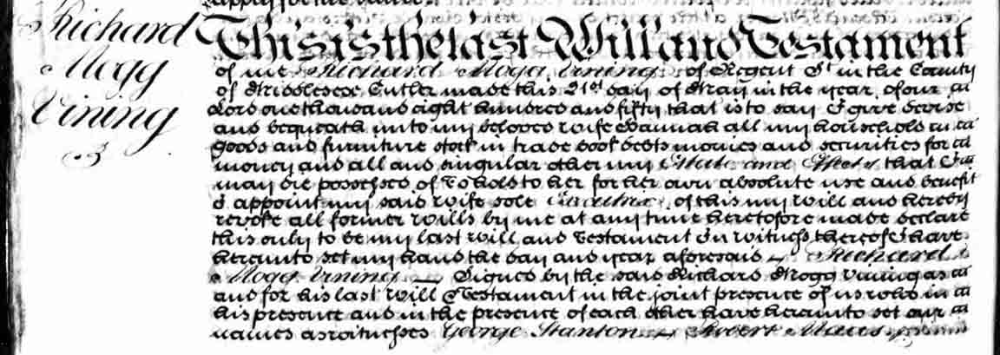

Family Data
Richard Mogg Vining was “a cutler and also made surgical instruments”, and “he ran a business from 125 Regent Street, London from approx. 1828 through to 1854, when he died, and the business was sold by his wife in 1855”.Death Data
Will of Richard Mogg Vining: